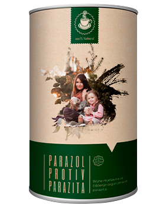

Ho quasi perso mio marito a causa di una terribile malattia infettiva: l'80% della popolazione in Italia è contagiata da parassiti senza nemmeno saperlo! Questo può succedere a chiunque.

Ciao a tutti
Conosci il senso di colpa quando la persona che ami è malata e non puoi fare a meno di guardare la sua sofferenza? L'ho sperimentato e voglio parlarvi della sofferenza che ha colpito la mia famiglia in modo che non ripetiate lo stesso errore.
Roberto e io viviamo insieme da 27 anni e non abbiamo quasi mai litigato. Gli amici ci chiamano ancora "sposi". Avevamo molti piani ma non ne è venuto fuori nulla.
Tutto è iniziato quando il marito ha iniziato a lamentarsi alito cattivo . Ero un medico, quindi siamo andati a controllare i denti e lo stomaco ma non abbiamo rilevato alcuna malattia.
Ma dopo quello, apparvero altri sintomi preoccupanti .
Il marito ha cominciato a soffrire gonfiore ma non mangiava bene ed era molto magro.
Ha iniziato a lamentarsi cuore, fegato e pancreas. Abbiamo fatto un elettrocardiogramma, abbiamo testato il sangue, ma entrambi i test sono risultati negativi.
Ed inoltre, e la nostra vita intima si estinse. Un giorno, ha ammesso di avere un problema di erezione. Un uomo forte ed energico come lui si è improvvisamente trasformato in un goblin che ha sempre teso e perso interesse per la vita.
Quando siamo arrivati in ospedale, il medico ci ha fatto una diagnosi terribile - infezione parassitaria .Quasi il 70% del corpo di mio marito era occupato da parassiti. Non ho potuto comprendere appieno il motivo di ciò perché il marito è sempre pulito, ha carta disinfettante e il cibo è cucinato con cura ed è sempre pulito. Non potevo immaginare che questi lievi sintomi fossero un segno di un'infezione parassitaria.
Mi chiedevo COME POTREBBE ACCADERE? Poi ho preso i risultati dei test di mio marito e ho scritto una lettera al Centro croato di ricerca sui parassiti. Mi hanno inviato una risposta scioccante:

"Tutti i problemi di tuo marito sono i primi sintomi infezioni parassitarie . Quando viene infettato da un parassita, il corpo si degrada lentamente. All'inizio non è chiaro e poi tutto si rivela. Tutto inizia con alitosi, gonfiore, depressione, mal di testa, occhiaie, scarso appetito e dolori articolari e muscolari. Negli uomini, i parassiti causano malattie della prostata, impotenza, malattie cardiache e malattie del fegato. Nelle donne, provocano infiammazione della vagina, gonfiore delle ovaie, infiammazione della vescica, tumori ovarici, tumori dell'ovaio policistico, gonfiore dei reni, ureteri e reni e inoltre invecchiamento della pelle. Nei bambini provocano acne e occhi vitrei. Se ignoriamo i sintomi lievi porteranno alla sofferenza degli organi interni e alla fine alla morte. "
850.000 persone in Italia muoiono ogni anno senza essere consapevoli che i parassiti sono i principali colpevoli. Gli assassini invisibili sono tutti intorno a noi, nel pesce, nella verdura e nella frutta che le persone acquistano nei negozi.
Ho iniziato a cercare una cura. Sono quasi impazzito perché non riuscivo a guardare con calma la persona che amo soffrire davanti ai miei occhi. Per lo più non dormivo. Ho letto dozzine di libri, ho chiesto consiglio ai colleghi. Abbiamo provato dozzine di farmaci che non funzionavano affatto e i medici non hanno potuto aiutarci. Le sue condizioni sono peggiorate. Pensavo di essere inutile e mi incolpavo di non essere riuscito a salvarlo.
Nel momento in cui ho pensato che fosse tutto inutile, ho trovato qualcosa su Internet - .
Quasi 250.000 persone infette che hanno utilizzato questo prodotto hanno rimosso quasi 300 diversi parassiti in due giorni.
Teo: Come hai rimosso i parassiti:
Farmaci
23%
67%
Sto ancora cercando un metodo
10%
All'inizio ero sospettoso ma le condizioni di mio marito non stavano migliorando così ho deciso di fare qualcosa. Il prodotto è arrivato in un giorno.
Ho iniziato a preparare il tè per mio marito mettendo un cucchiaino di tè in una tazza di acqua bollente e lasciandolo per 30 minuti e dandogli 2-3 tazze al giorno come scritto nelle istruzioni. È stato più facile per me perché lo è Il tè è davvero efficace e non riesco a esprimerlo a parole.
Dopo un giorno il fegato e l'intestino sono tornati al 65% della loro funzione, mentre i reni e il cuore funzionavano normalmente. Dopo 3 giorni, quando eravamo soli, mio marito mi ha detto che aveva un'erezione. Gli ingredienti naturali presenti in sono molto efficaci nella rigenerazione dei tessuti, quindi il trattamento è Più veloce.
Dopo 5 giorni, il marito è stato nuovamente testato. Non c'erano segni di parassiti nel corpo. rimosso tutte le uova e altre cose che hanno danneggiato il corpo in poche ore. Grazie all'effetto di accumulo, rafforza il sistema immunitario e protegge le cellule dai parassiti. Ciò evita la possibilità di reinfezione a lungo termine. Dopo una settimana, il marito si è completamente ripreso.
In seguito ho capito perché non l'avevo trovato nelle farmacie e in altri negozi. Il motivo è che questo prodotto è nuovo e molto efficace (lo abbiamo provato), ma non è stato pubblicizzato sui media a causa di un possibile aumento di prezzo e contraffazione. Pertanto, questo prodotto può essere acquistato solo sul sito Web ufficiale del produttore.
Non commettere lo stesso errore di me! Se avessi prestato attenzione a questi sintomi innocui prima (gonfiore, alitosi ed erezione) mio marito non si sarebbe ammalato così tanto.
è una miscela di erbe unica che cura istantaneamente i primi sintomi di un'infezione parassitaria ed elimina la possibilità di recidiva dell'infezione, Se, dopo aver letto la mia storia, scopri almeno uno dei sintomi (!) INIZIA IL TRATTAMENTO ADESSO!
Proteggi te stesso e i tuoi cari, ordina non appena compaiono i primi sintomi e non aspettare complicazioni.
-

Agnese
Ciao, la tua storia mi ha toccato così tanto che ho pianto
durante la lettura. Sono contento che tu abbia trovato una soluzione e salvato
una persona cara! Grazie per averci parlato di questo prodotto. Ho ordinato tramite il tuo link perché ho un sintomo e mio marito
ne ha diversi. Se non avessi letto il tuo testo non avrei mai notato cose del
genere.
Mi piace ● Rispondi ●  3 ●
3 ●
-
Aldo
Ho letto molto a riguardo. All'inizio dubitavo, ma ho deciso
comunque di fare un tentativo: i parassiti stavano scomparendo molto lentamente
e sono rimasto sorpreso dalla loro quantità nel mio corpo.
Mi piace ● Rispondi ●  2 ●
2 ●
-
Bartolomeo
C. Dopo aver letto la tua storia, sono andato nel panico.
Sono nella stessa situazione. Bevi adesso.
Ordina qui.
Mi piace ● Rispondi ●  1 ●
1 ●
-

Anna
Esatto: se hai solo uno dei sintomi di questa storia, allora è
sicuramente un'infezione parassitaria! Avevo anche l'alitosi e l'infiammazione
vaginale. Poi il mio fegato ha cominciato a tormentarmi. A volte sentivo dolore
lungo quel lato ma pensavo di essere stanco. Bevi
e ti sentirai subito meglio perché distrugge i parassiti. Sono
passati due mesi e mi sento ancora benissimo! Tutti dovrebbero provarlo!
Mi piace ● Rispondi ●  4 ●
4 ●
-
Basilio questo è orribile! Può
succedere?
Mi piace ● Rispondi ●  5 ●
5 ●
-
Katarina
Tutta la famiglia beve tè
- Non ho più l'alitosi. Il marito non è più infastidito dal fegato, i
bambini dormono meglio, il naso non cola e non prude. Non indovinerai mai come e
dove ottenerlo.
Mi piace ● Rispondi ●  3 ●
3 ●
-

Camillo0099
Ho ordinato. Ma nel mio caso, è una brutta erezione. Non avrei
mai pensato che fosse dovuto ai parassiti, ma dopo aver bevuto tutto è di nuovo normale e il respiro è
migliore. Ora per precauzione bevo ogni 3 mesi.
Mi piace ● Rispondi ●  2 ●
2 ●
-
Maria
Prima di ordinare ho controllato gli ingredienti. Si tratta di
ingredienti naturali adatti a persone sensibili ai farmaci. Dato che soffro di
allergie, è stato molto importante per me! Non posso usare altri farmaci a causa
degli ingredienti. Di conseguenza, l'infiammazione della vagina è scomparsa come
se non esistesse nemmeno. Ero un po 'spaventato a causa di così tanti parassiti.
Adesso sto perfettamente bene.
Mi piace ● Rispondi ●  1 ●
1 ●
-
David Enzo
Ho ordinato tramite questo link Dopo tre giorni è
arrivato tutto senza problemi. Ho iniziato a bere subito e mi sono sentito
meglio.
Mi piace ● Rispondi ●  3 ●
3 ●
Ordina